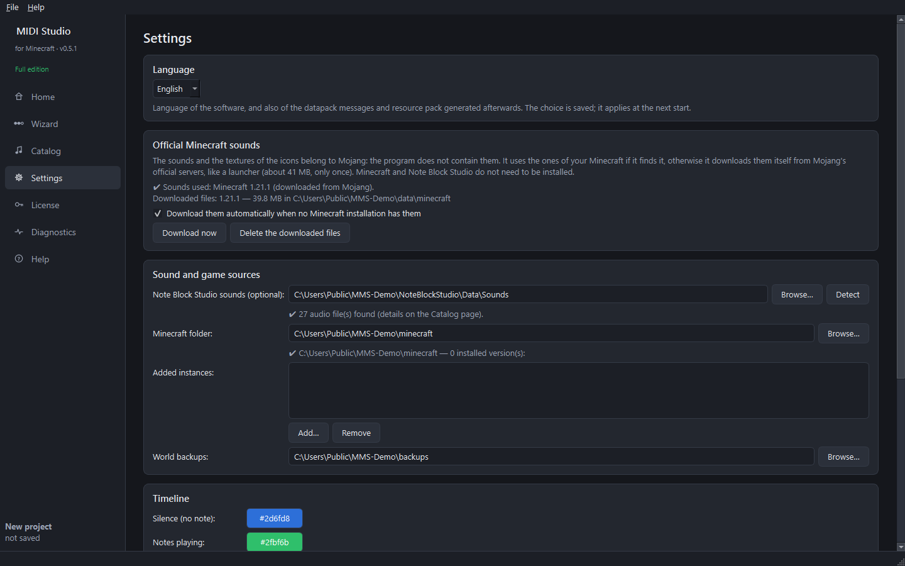

Step 2 — First settings
Goal: choose the language and check where the sounds come from (usually nothing to change).
Open the Settings page from the left menu.

Language
- In Language, choose English or Français.
- Click Restart now (or simply restart the program later).
The language is saved. It is also used for the messages of the datapack (in-game chat) and the description of the resource pack generated afterwards.
Official Minecraft sounds
Usually nothing to do: the software uses the sounds of your Minecraft, or downloads them itself from Mojang's official servers (see step 1). This section shows the version used and lets you:
- Download now — start the download again (after an internet cut, for example);
- Delete the downloaded files — free about 41 MB (they will be downloaded again when needed);
- untick the automatic download if you prefer to use only your Minecraft installation.
Sound and game sources
- Note Block Studio sounds (optional) — only to add its custom sounds to the full edition. Usually detected automatically (
…\Minecraft Note Block Studio\Data\Sounds); if not, Browse…. - Minecraft folder — leave it on Automatic if you use the official launcher. Modrinth, CurseForge and Prism Launcher instances are found by themselves.
- Added instances — only if your game folder is somewhere unusual: click Add… and choose the folder that contains
saves. - World backups — where the ZIP backups made before installing are stored.
Timeline and audio
- The colours of the timeline (blue = silence, green = notes playing) can be changed.
- Audio output and Preview volume only affect the preview inside the software, not the game.
Next guide: choose your world.